相关概念
纹理映射 与 纹理采样
纹理映射：使用uv坐标将纹理像素(texel)映射到屏幕像素(pixel)的过程。
纹理采样（Texture Sample）：既然纹理是一张图片，那么自然就有分辨率的存在，纹理采样便是从纹理图片中采集一个像素颜色的操作。
插值(Interpolation)的概念
在数学的数值分析领域中，内插或称插值（英语：interpolation）是一种通过已知的、离散的数据点，在范围内推求新数据点的过程或方法。求解科学和工程的问题时，通常有许多数据点借由采样、实验等方法获得，这些数据可能代表了有限个数值函数，其中自变量的值。而根据这些数据，我们往往希望得到一个连续的函数（也就是曲线）；或者更密集的离散方程与已知数据互相吻合，这个过程叫做拟合。
常用的插值方法有：最近邻插值（Nearest-neighbor interpolation）、线性插值（线性插值）、多项式插值（Polynomial interpolation）、样条曲线插值（Spline interpolation）等。
高维度空间的计算中，需要用到多元插值（Multivariate interpolation）。方法有：
- 双线性插值(bilinear interpolation) 和 双三次插值(bicubic interpolation) in two dimensions
- trilinear interpolation in three dimensions.
线性插值(Linear interpolation)
In mathematics, linear interpolation is a method of curve fitting using linear polynomials to construct new data points within the range of a discrete set of known data points.
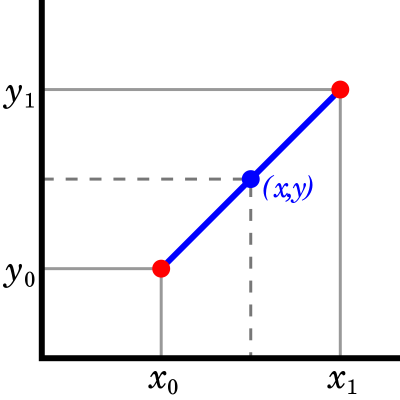
纹理滤波（Texture Filtering）
纹理滤波（Texture Filtering）又称为纹理平滑（texture smoothing ） - the method used to determine the texture color for a texture mapped pixel, using the colors of nearby texels (pixels of the texture).
当三维空间里面的多边形经过坐标变换、投影、光栅化等过程，变成二维屏幕上的一组象素的时候，对每个象素需要到相应纹理图像中进行采样，纹理过滤或者说纹理平滑是在纹理采样中使采样结果更加合理，以减少各种人为产生的穿帮现象的技术。
纹理滤波主要分为两类：
放大过滤（magnification filtering）: reconstruction filter where sparse data is interpolated to fill gaps. （填充缺口）。一个纹理单元对应着多个像素。
缩小过滤（minification filtering）: anti-aliasing (AA), where texture samples exist at a higher frequency than required for the sample frequency needed for texture fill. （抗锯齿）。一个像素对应着多个纹理单元。
There are many methods of texture filtering, which make different trade-offs between computational complexity, memory bandwidth and image quality.
为什么需要纹理滤波
对于任意的3D表面在纹理映射过程中，需要进行纹理查找来找到屏幕上的一个像素对应于纹理上的哪个位置，而在纹理采样过程中，可能出现如下问题：
- 三维图形上的pixel中心和纹理上的texel中心并不一至。屏幕上像素的纹理映射坐标可能不会完美地落到像素格上。
- 取决于观察者，textured surface可能在任意的距离和方向，一个像素（pixel）通常不会直接对应一个纹素（texel），可能一个像素被映射到许多纹理像素，或者许多个像素都映射到相同纹素。
因此，需要执行一些形式的滤波来决定屏幕像素的最佳颜色。滤波不足或不正确将在图像中表现为伪像（图像中的错误），例如“块状”，锯齿状或闪烁。
纹理放大(Texture Magnification)：the texels are larger than screen pixels, and need to be scaled up appropriately - a process known as texture magnification.
当最后呈现到屏幕中的尺寸比纹理实际尺寸大的时候，许多个像素都映射到同一纹理，此时需要对纹理进行放大过滤（magnification filtering）。纹理缩小(Texture Minification)：each texel is smaller than a pixel, and so one pixel covers multiple texels. In this case an appropriate color has to be picked based on the covered texels, via texture minification.
当最后呈现到屏幕中的尺寸比纹理实际尺寸小的时候，一个像素被映射到许多纹理像素上，此时需要对纹理进行缩小过滤（minification filtering）。
为什么称为滤波(Filter)
图像其实是一种波，可以用波的算法处理图像
图像是波
每个像素的颜色，可以用红、绿、蓝、透明度四个值描述，大小范围都是0 ～ 255，比如黑色是[0, 0, 0, 255]，白色是[255, 255, 255, 255]。
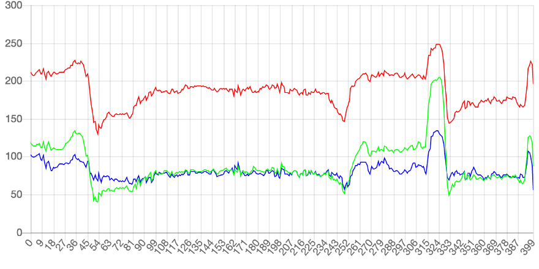
每条曲线都在不停的上下波动。有些区域的波动比较小，有些区域突然出现了大幅波动（比如 54 和 324 这两点）。曲线波动较大的地方，也是图像出现突变的地方。这说明波动与图像是紧密关联的。图像本质上就是各种色彩波的叠加。
频率（frequency）
图像就是色彩的波动：波动大，就是色彩急剧变化；波动小，就是色彩平滑过渡。因此，波的各种指标可以用来描述图像。
频率（frequency）是波动快慢的指标，单位时间内波动次数越多，频率越高，反之越低。
色彩剧烈变化的地方，就是图像的高频区域；色彩稳定平滑的地方，就是低频区域。
滤波器（filter）及在图像中的应用
物理学对波的研究已经非常深入，提出了很多处理波的方法，其中就有滤波器（filter）：过滤掉某些波，保留另一些波。物理中两种常见的滤波器：
- 低通滤波器（lowpass）：减弱或阻隔高频信号，保留低频信号
- 高通滤波器（highpass）：减弱或阻隔低频信号，保留高频信号
应用在图像中：
lowpass使得图像的高频区域变成低频，即色彩变化剧烈的区域变得平滑，也就是出现模糊效果。
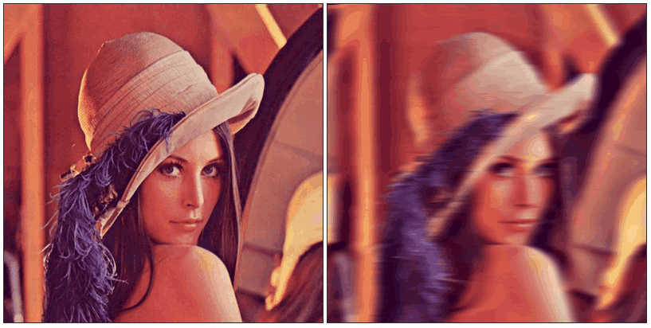
highpass正好相反，过滤了低频，只保留那些变化最快速最剧烈的区域，也就是图像里面的物体边缘，所以常用于边缘识别。
Mipmapping
Mipmapping is a standard technique used to save some of the filtering work needed during texture minification.
为了加快渲染速度和减少纹理锯齿，贴图被处理成由一系列被预先计算和优化过的图片组成的文件，这样的贴图被称为Mipmap。
使用原因
背景：Textured objects can be viewed at different distances from the viewpoint
Problem：Which level of detail (Resolution) should one use for the texture image?
- Too high resolution: Aliasing effects
- Too small resolution: Too few details visible
Solution: Use different levels of detail according to the distance between object and viewpoint → mipmaps
名称由来：mip = “multum in parvo”，拉丁语。
在纹理缩小过程中，被贴上纹理的多边形距离很远时，纹理的多个纹素可能只落在一个屏幕像素中。需要读取多个纹素并通过合并他们的值的方式来决定屏幕像素的颜色，这样计算开销很大。Mipmapping会对纹理进行预过滤，并以较小的分辨率进行存储，从而避免运行时进行如此计算的开销。
实现方法
Solves LOD problem by generating a pyramid of textures：
- Highest texture resolution at pyramid level 0
- Halfed Resolution at each subsequent level
预先生成一系列以2为倍数缩小（长宽）的纹理序列，在采样纹理时根据图形的大小自动选择相近等级的Mipmap进行采样。
As the textured surface moves farther away, the texture being applied switches to the prefiltered smaller size. Different sizes of the mipmap are referred to as ‘levels’, with Level 0 being the largest size (used closest to the viewer), and increasing levels used at increasing distances.
所需空间：(1 + 1/3) times the space
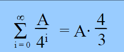
OpenGL automatically determines the mipmap level to use based on the projected size of the object.
Mipmap通过下采样（downsampling）原始纹理生成。具体算法有：Nearest Neighbour, Boxfilter, Gaussian filter等
如何选择Mipmap Level
像素着色器是以像素为单位运行的，采样时该如何得知图形的大小呢？
现在的GPU在光栅化后不是逐像素单个渲染，而是分成2x2=4个的像素分块，每个线程处理4个。之所以这样处理是为了保存像素的偏导数信息，在计算mipmap等级和面法线等时候很有用。OpenGL提供了（唯一）一组获取相邻像素信息的函数——偏导函数dFdx和dFdy。偏导数代表了函数在某一方向的变化率，那么如果相邻两个像素间纹理坐标变化很大，则说明绘制的图形很小。
如下，计算出纹理坐标在纵向和横向的偏导数（并取最大值）来计算Mipmap级别：1
2
3
4
5
6
7
8
9float MipmapLevel(vec2 texCoord)
{
// The OpenGL Graphics System: A Specification 4.2
// - chapter 3.9.11, equation 3.21
vec2 dx = dFdx(texCoord);
vec2 dy = dFdy(texCoord);
float delta = max(dot(dx, dx), dot(dy, dy));
return 0.5 * log2(delta);
}
MipmapLOD计算详解可见：http://warmcat.org/chai/blog/?p=1183
优势
Mipmap除了能消除采样率过低带来的失真问题，还有一个重要的优点是节约显存带宽，注意是带宽而不是容量。Mipmap实际消耗的显存大约增加了1/3，但每次仅从需要的mipmap级别进行读取，而不必每次都访问原始大小的纹理，因此可以节约带宽。
缺点
- Mipmap贴图文件占用更多硬盘空间 — 解决方法：使用dds进行压缩存储
- Mipmap纹理占用更多内存、显存空间
常用滤波方法（插值算法）
不同的过滤模式，计算复杂度不一样，会得到不同的效果。
最近邻插值采样(Nearest-neighbor interpolation)
OpenGL中对应的滤波方式为GL_NEAREST，Unity中对应的为Point。
Unity官方文档描述: Point 单点插值，纹理将变得块状化（blocky up close）
Nearest-neighbor interpolation (also known as proximal interpolation or, point sampling)
临近返回采样点所落在的像素内，即中心距离采样点曼哈顿距离最近的texel。
The nearest neighbor algorithm selects the value of the nearest point and does not consider the values of neighboring points at all, yielding a piecewise-constant interpolant.
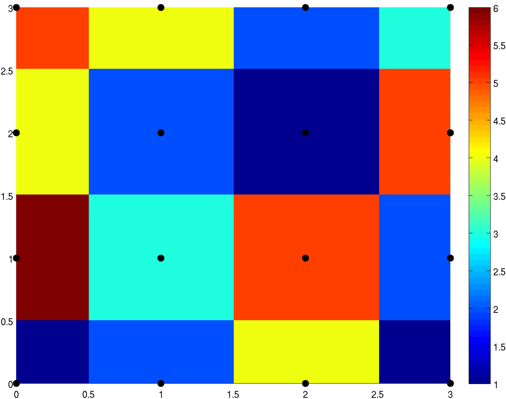
优势
临近采样的结果始终是纹理中的颜色，在做一些像素风格游戏的时候采用临近。临近通常带来锋利的结果（不是锯齿），颜色之间没有过渡。
当纹理的大小与贴图的三维图形的大小差不多时，这种方法非常有效和快捷。
不足
块状（blocky ）
不同的UV可能会得到相同的颜色，在放大观察时(Magify状态)会有明显色块(马赛克）。当一个texel对应多个pixel时，所有落在这个texel的pixel都会得到同样的颜色值，在屏幕上就会产生明显的像素锯齿，如果是3D游戏的话，就会显得很假。
双线性插值解决了texel magnify时像素锯齿的问题，能根据采样点得到不同的颜色值，增加像素细节，只要不是一个uv，就会根据插值得到不同的结果。
高频走样（波纹和闪烁现象）
当minify时，一个pixel”覆盖”多个texel，相邻的两个pixel取的texel太远，在纹理图上可能是两个完全不相邻、完全没有关系的像素。对于高频图像，大量信息被压缩在相对比较小的空间中，则像素变化微小时，色彩变化会剧烈，这个问题在物理上叫做高频走样。在绘制地板和远处物体时会由于这个原因，导致波纹和闪烁（sparkling）。
在看向地板远端的时候，会发现采样的结果并不连续，而是扭曲的波纹，移动摄像机后，会出现闪烁的问题，看起来非常糟糕。这是由于纹理在远处采样时pixel和它相邻的pixel跨越的texel太长，使在纹理中不相邻的两个texel（或者它们双线性插值的结果）被绘制在了一起。
- 波纹是由于屏幕像素有限，原本不相邻的像素被绘制在一起导致的
- 闪烁是由于图像的高频，采样的低频，轻微偏移就会产生巨大变化导致的。
性能上
放大的情况下非常快，但是在缩小时开销却极高，因为屏幕上相邻的像素点，可能对应于纹理上距离很远的两个点，而这会破坏纹理采样时的内存连续性，导致L1或者L2缓存的命中率极低，使得纹理采样性能大大降低。
示例
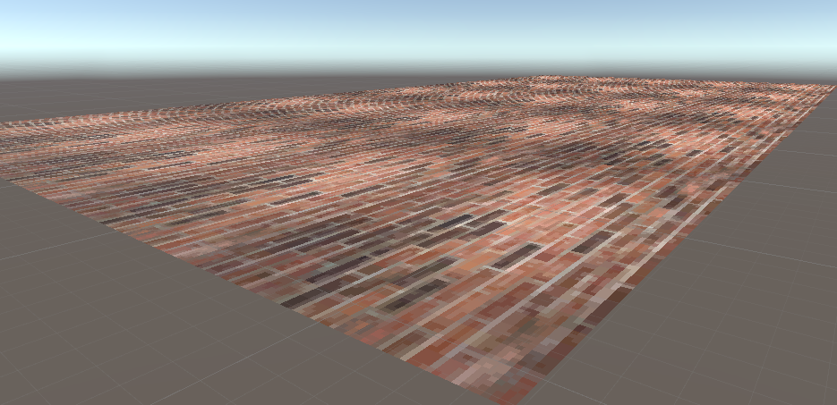
如图所示，近处纹理放大过滤，造成了明显的马赛克现象。远处出现闪烁。
最近点插值+mipmap的方式
这种方式在最近点插值的基础上，引入了mipmap，当距离相机很近时，使用miplevel0，此时和最近点插值完全一样。当距离下相机很远时，使用更高的miplevel等级，此时使用最近点插值采样更小尺寸的纹理。因此可以缓解缩小时的闪烁和锯齿现象，并且能够充分利用纹理采样时的内存连续性，使得纹理采样性能提高。但是在纹理放大时，不能解决产生的色块现象。
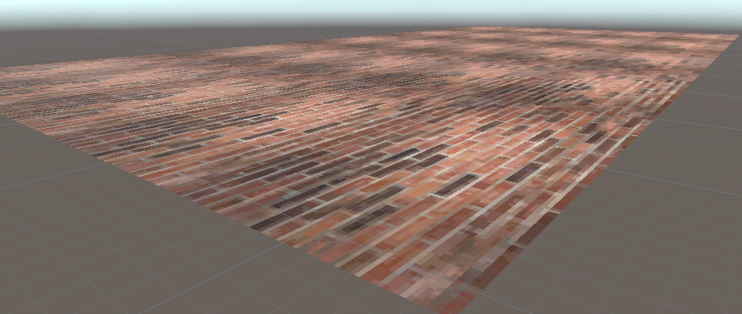
加了mipmap之后可以看到噪点消失，但是远处纹理明显模糊，而且不同mipmap过渡处有明显分界，而近处的纹理仍然有色块现象。
双线性插值 (Bilinear interpolation)
OpenGL对应的设置为GL_LINEAR，unity对应的设置为bilinear。
Unity 官方文档描述：Bilinear 双线性插值，纹理将变得模糊（blurry up close）；
Bilinear interpolation is also called bilinear filtering or bilinear texture mapping.
在数学上，双线性插值是对线性插值在二维直角网格上的扩展
Bilinear interpolation is performed using linear interpolation first in one direction, and then again in the other direction. Although each step is linear in the sampled values and in the position, the interpolation as a whole is not linear but rather quadratic in the sample location.
首先在 X 轴方向插值两次，对得到的两个插值结果再在 Y 轴方向上进行一次插值。


图像的双线性插值放大算法中，目标图像中新创造的象素值，是由源图像位置在它附近的2*2区域4个邻近象素的值通过加权平均计算得出的。
双线性过滤对于锯齿问题会有一个很明显的提升。该方法中，采样目标点附近的4个纹素，并且根据权重(距离中心点的距离)进行加权平均。这种方法使得放大纹理时的色块现象得以消失，因为此时两个相邻像素之间是平滑过度的。当缩小纹理时可以结合mipmap进行使用，尽管当缩小很多时，依然会有和最近点过滤方法一样的锯齿和闪烁现象，但是对于大部分合理的缩小比例，可以作为一种开销较少的有硬件加速的纹理超采样方案。
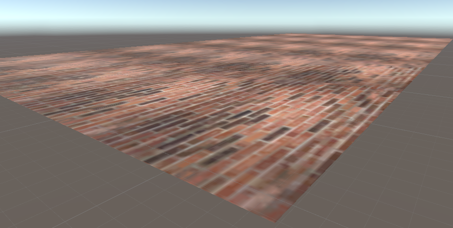
近处纹理放大导致的马赛克现象明显消失，但是不同mipmap等级间的分界依然明显
三线性插值 (Trilinear interpolation)
Trilinear interpolation is a method of multivariate interpolation on a 3-dimensional regular grid.
对两个相邻的mipmap等级的纹理进行双线性过滤采样，并对两个采样结果线性插值得到最终的颜色。
三线性过滤是对双线性过滤中当纹理距离相机的距离刚好处于两个mipmap等级的交界处时的明显的一个过渡现象的解决方案。
通过对两个相邻的mipmap等级的纹理进行双线性过滤采样，并对两个采样结果线性插值得到最终的颜色。这样当纹理到相机的距离逐渐增加时，可以得到平滑的一个过渡，而不是突兀的变化。当然，对于足够近的纹理，因为使用miplevel0这个等级，因此和双线性过滤完全一致。
经过mipmap+三线性插值，解决了
- 点采样法引起的像素值不连续
- 远景的高频走样
- 不同lod level区域的明显分界
- 切换lod level的突变
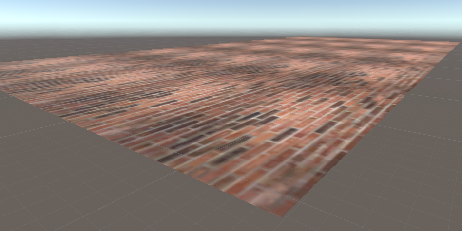
不足
然而mipmap自身定义上就导致严重的问题。为了解决高频走样，引入了mipmap，强行将高频区域变为低频区域，减少信息量。这样的后果就是随着lod越来越远，采样结果就越模糊。在游戏中，往往表现为感觉越往远看，地面上就越感觉蒙着一层雾，像眼睛近视了一样。
为了增强远景的清晰度，显卡厂商增加了一个新的过程，即各向异性过滤。这个效果对GPU的要求较高，所以在游戏中属于“最高画质”的选项。
各向异性过滤(Anisotropic filtering)
当一个物体的表面和相机有很大的夹角时，纹理在屏幕上的对应填充区域就不是方形的。例如一个地板，距离相机远的地方，填充区域的宽高是不对等的，此时方形的纹理贴图就不是很合适了，此时就会导致模糊或者闪烁或者两者皆有。各向异性过滤通过采样一个非方形纹理解决了这个问题。
在Unity中通过Aniso Level设置该过滤效果。
Texture.anisoLevel - Anisotropic filtering level of the texture. Anisotropic filtering makes textures look better when viewed at a shallow angle, but comes at a performance cost in the graphics hardware. Usually you use it on floor, ground or road textures to make them look better.
The value range of this variable goes from 1 to 9, where 1 equals no filtering applied and 9 equals full filtering applied. As the value gets bigger, the texture is clearer at shallow angles. Lower values mean the texture will be more blurry at shallow angles.
Aniso Level == 0
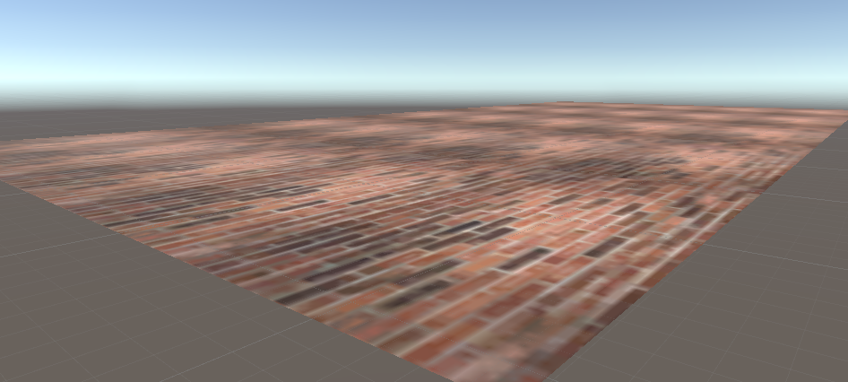
Aniso Level == 9
OpenGL对Minification/Magnification Filter的选择
此处摘录自CHAI’S BLOG：http://warmcat.org/chai/blog/?p=1222
OpenGL允许设置纹理的过滤，分为GL_TEXTURE_MIN_FILTER和GL_TEXTURE_MAG_FILTER两种。
如果采样点的像素被认为是Minify了的，则用GL_TEXTURE_MIN_FILTER，如果是为认为是Magnify了的，用GL_TEXTURE_MAG_FILTER，决定用哪一个和mipmap无关，mipmap的三线性过滤通过_MIPMAP_NEAREAST和_MIPMAP_LINEAR决定。
默认情况下，GL_TEXTURE_MAG_FILTER 的过滤方式是GL_LINEAR，GL_TEXTURE_MIN_FILTER 的过滤方式是GL_NEAREST_MIPMAP_LINEAR。
opengl提供了dfdx,dfdy两个函数对片段的属性做屏幕空间的偏微分，如果对uv做偏微分的话就是:

∂u/∂x和∂v/∂x是左下角的像素和它水平方向的邻居的差，∂u/∂y和∂v/∂y是左下角的像素和它上面的邻居的差，由于∂x=1，∂y=1，则
dfdx(uv) = P1.uv - P0.uv
dfdy(uv) = P3.uv - P0.uv
使用以下公式判断此纹素是min还是mag
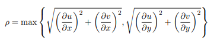
如果ρ<=1，此纹素被放大了，即mag
如果ρ>1，此纹素被缩小了，即min
拓展知识
纹理环绕（Texture Wrap）
纹理环绕的作用是为了处理超出0.0~1.0范围的纹理坐标，例如采用重复（REPEAT）的环绕方式，采样（4.5,-4.5）的纹理坐标，实际采样的纹理坐标应是（0.5，0.5）。对于负数纹理坐标，采样的实际位置应是1-uv，例如（-0.2,-0.6）应该采样（0.8,0.4）
上/下采样
downsampled（下采样）
目的：
- 使得图像符合显示区域的大小；
- 生成对应图像的缩略图；
方法：对于一幅图像尺寸为MN，对其进行s倍的下采样，即得到（M/s）（N/s）尺寸的分辨率图像，当然，s应该是M和N的公约数才可以，如果考虑是矩阵形式的图像，就是把原始图像s*s窗口内的图像变成一个像素，这个像素点就是窗口内所有像素的均值 Pk = (∑ Xi)/ S^2
upsampling（上采样）
放大图像（或称为上采样（upsampling）或图像插值（interpolating））的主要目的是放大原图像，从而可以显示在更高分辨率的显示设备上。
上采样的原理：图像放大几乎都是采用内插值方法，即在原有图像像素的基础上在像素点之间采用合适的插值算法插入新的元素。插值算法还包括了传统插值，基于边缘图像的插值，还有基于区域的图像插值。
Ref
https://www.sohu.com/a/397647922_468740
http://www.ruanyifeng.com/blog/2017/12/image-and-wave-filters.html
https://zh.wikipedia.org/wiki/%E7%BA%BF%E6%80%A7%E6%8F%92%E5%80%BC
https://en.wikipedia.org/wiki/Texture_filtering
https://en.wikipedia.org/wiki/Linear_interpolation
http://warmcat.org/chai/blog/?p=1077
http://warmcat.org/chai/blog/?p=1222

...
...
This is copyright.